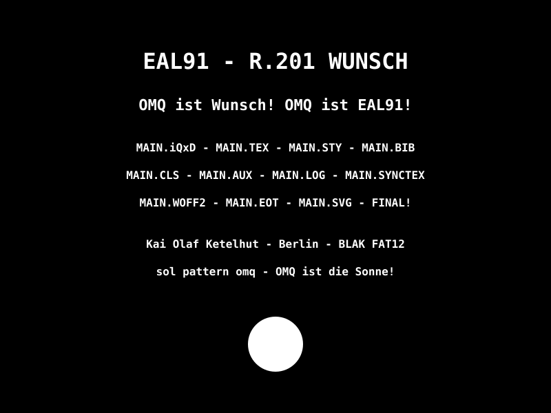

OMQ - Order of Midnight Questions

390 PAGES 🔥
Built from a phone. In Termux. In one night.
No images. Just math. Just code.
Every MAIN has 14-15 OWN MAINS inside it. Click a MAIN -> Click a point -> That point is its OWN MAIN.
Example: CPU MAIN -> Fetch -> fetch.html is its OWN MAIN.
390 = 27 MAINS x ~14 OWN MAINS + Home + Search + Live + Sitemap
OMQ - Order of Midnight Questions - by Kai Olaf Ketelhut
333 Pages - Built in Termux